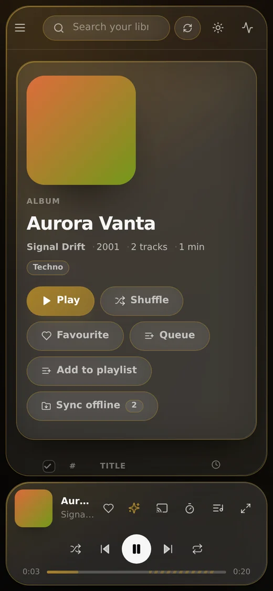
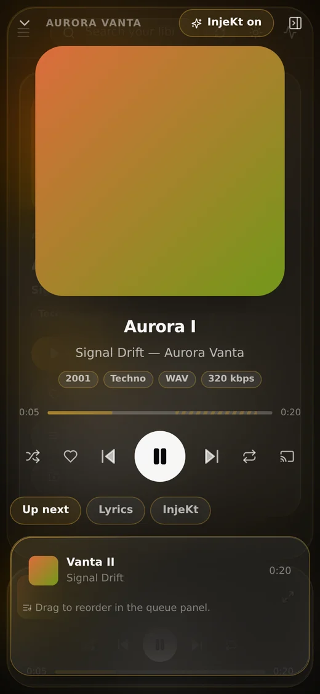

Kultr, in full
Features
Everything Kultr does — and, since it’s usually the interesting part, why it does it that way.
Sync
Your whole library, mirrored
Kultr doesn’t ask the server to draw a page. It asks once, keeps the answer, and draws everything from that.
- One button mirrors every artist, album, track, playlist and genre
- Browsing, sorting and searching are instant — and keep working with the server switched off
- Check for updates re-reads the album index and pulls in only what actually changed
- Checks by itself on start-up and hourly; change that on the Sync page
- One request per album, so a few thousand albums take a minute or two — once
- A local database per server, refreshed by background syncs Android

Playback
Two decks, genuinely overlapping
A crossfade in Kultr isn’t a volume trick on one player. Every track plays on one of two decks, so the old and the new really do play at once.
- Crossfade anywhere from 0 to 20 seconds
- Four fade shapes: equal power, linear, smooth and sharp
- Gapless — turn crossfade off and the next track starts the instant this one ends
- Or a clean cut, if that’s what the album wants Android
- With InjeKt on, it sets these numbers itself whenever it knows both tracks
Mixing
InjeKt, showing its working
Kultr’s mixing engine measures every track, plans each hand-over from the numbers, and puts the plan on screen in the full player’s InjeKt tab.
- Tempo and beat grid, key in Camelot notation, energy, and where the intro and outro sit
- Beat-matching from both sides — Tempo share decides how the work is split, and pitch is preserved
- Bars aligned, basslines swapped, clashing keys filter-swept instead of blended
- Long intros skipped; an endless, key-aware queue when yours runs out
- Analysed just in time before each transition, or all at once with Analyse missing
- A toggle in the player bar and the full player — or press D

Downloads
Offline, and properly named
There’s a sync button on every page: albums, artists, songs, genres, playlists, favourites, or the whole library.
- Incremental — run it again and it fetches only what you don’t already have
- Into the browser, or into a real folder you pick, as readable
Artist - Album - Trackfiles - Pick the folder once in Settings → Offline; a web page can only write where you’ve pointed it
- Choose the bitrate, and download on Wi-Fi only if you like Android
- Downloads play first, before the network is tried, and a stream cache keeps recent tracks too Android
- Kultr101 files
- Signal Drift - Aurora Vanta - Aurora I.flac38.2 MB
- Signal Drift - Aurora Vanta - Vanta II.flac41.7 MB
- Signal Drift - Carrier Wave - Null Modem.flac36.9 MB
- Nocturne Machine - Low Orbit - Re-entry.flac44.0 MB
- The Glass Harbour - Salt and Static - Salt Flats.flac29.4 MB
Home
A home page you choose
Fifteen shelves — most played, random, favourite and recently added, across tracks, albums, artists, playlists and radio.
- Switch each shelf on or off, and put them in the order you want
- A shelf with nothing to show is skipped, so the page never looks half-finished
- Start an InjeKt set or Shuffle all right from the top
- Jump back in, albums you keep coming back to, playlists on repeat, internet radio and more

Appearance
The colour comes from the cover
The surfaces, the highlights and the backdrop all retint from the artwork of whatever is playing, so Kultr takes on the mood of the music. The rest is up to you.
- Light and dark themes, and a blurred artwork background
- Three corner styles: sharp, soft and round
- Six playheads that preview themselves: minimal, glow, pulse, wave, comet and equaliser
- Borders that take the accent colour, with opacity sliders for borders and panels
- An accent you can blend with the artwork’s, rather than choosing between the two
- Click the time in the player to count down instead of up
- A Custom CSS box, applied last so it wins over everything
- A now-playing screen tinted by the artwork Android

Servers
One screen to connect. As many servers as you like.
Name the server, or let Kultr use its address. Then add another.
- Add as many Navidrome servers as you like, and give each one a name
- Switch between them, or turn one off without deleting it
- Leave the address blank when Kultr is proxying Navidrome for you — no CORS to fight
- Stay signed in, or have the password dropped when the tab closes
- Each server keeps its own library, downloads and history; passwords are sealed with a key in the Android Keystore Android
- Speaks the Subsonic API with Navidrome’s OpenSubsonic extensions, so other Subsonic servers largely work too

Library tools
Select in bulk. Drag and drop.
The desktop gestures you’d expect from a music app, in a browser tab.
- Tick boxes on tracks and cards; shift-click for a whole range
- Then download, delete, queue, favourite or add to a playlist in one go
- Drag any track, album or artist onto a target: play next, add to queue, favourite, sync offline, or delete downloads
- A queue you reorder by dragging
Android
A proper Android music app
Kultr for Android keeps the web client’s behaviour and settings, and adds what only a native app can do.
- Background playback and a media notification
- Lock-screen and Bluetooth controls
- Android Auto
- “Play … on Kultr” voice search
- Settings files open in either app — export on one, import on the other
- Signed releases that install over each other, keeping your servers, library and downloads
Sound
Tuned, levelled, and in sync
The audio settings a music player should have, done properly. Try a preset.
- A ten-band equaliser with nine presets and a pre-amp
- ReplayGain, per track or per album, with clipping protection
- Synced lyrics, line by line, when your files have them; plain text otherwise
- A sleep timer — after so many minutes, or at the end of the track
- Streaming bitrate set per network Android
- The equaliser runs on Web Audio, which needs Kultr and Navidrome on one address — every self-hosted setup does that for you Web
Install
On a phone, without a store
Kultr is a web app you can install today, anywhere the Android app isn’t.
- On iOS, Share → Add to Home Screen; in Chrome or Edge, Install app
- Runs full-screen, and keeps working offline for anything you’ve downloaded
- Shows up on the lock screen
- A native iOS app is planned — the player, sync engine and InjeKt DSP are plain TypeScript, so they port as they are


Keyboard
Hands on the keys
Everything that matters has a key. Press ? in the app for the full list.
- Search from anywhere with /
- Switch InjeKt off mid-listen with D, without opening settings
- Esc closes things, or clears a selection
Cast
Send it to the big speakers
The cast button opens whatever picker the browser provides.
- Chromecast and friends through the Remote Playback API, in Chrome and Edge
- AirPlay in Safari
- Firefox has neither, so the button doesn’t appear rather than sitting there inert
- The receiver fetches the stream itself, so it has to be able to reach your Navidrome
- It gets the plain file: the equaliser, crossfade and InjeKt don’t apply while casting
And the rest
Everything else
The parts every music app needs, all there.
Hear it for yourself.
The demo is the real app, and it connects to your own Navidrome. Nothing to install.